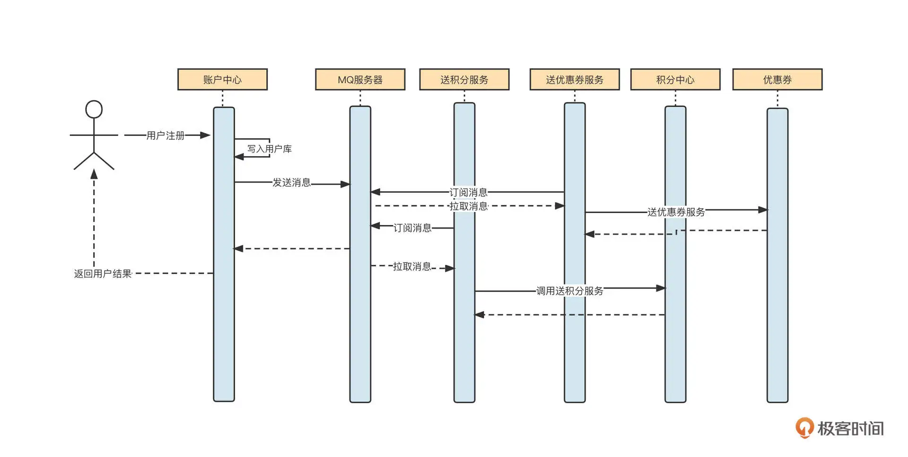
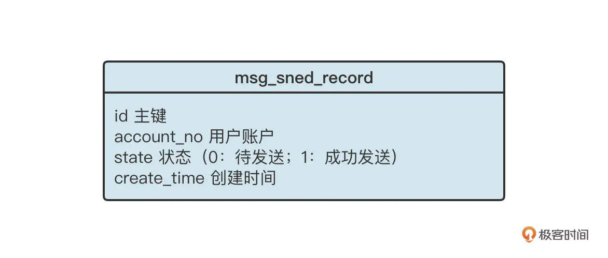
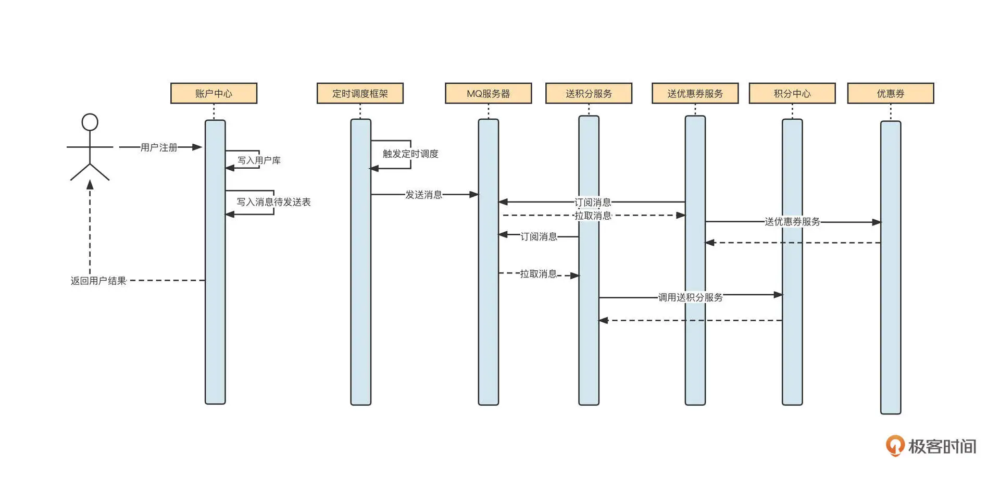
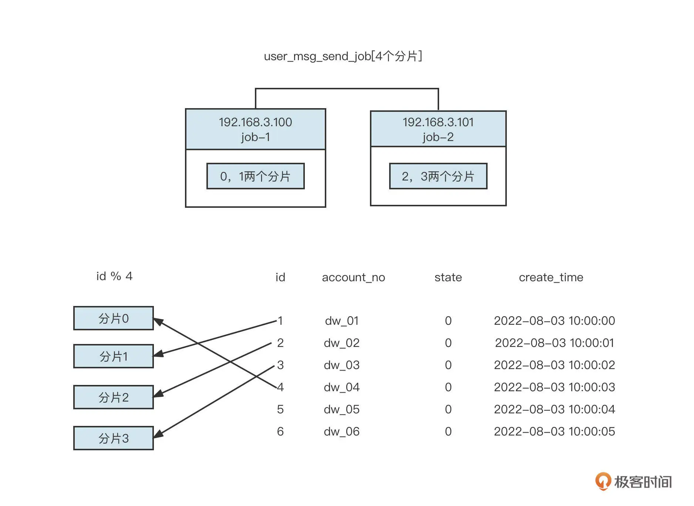
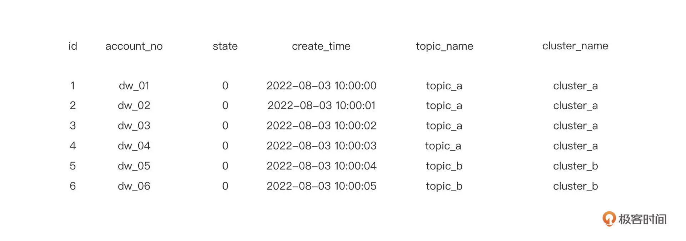
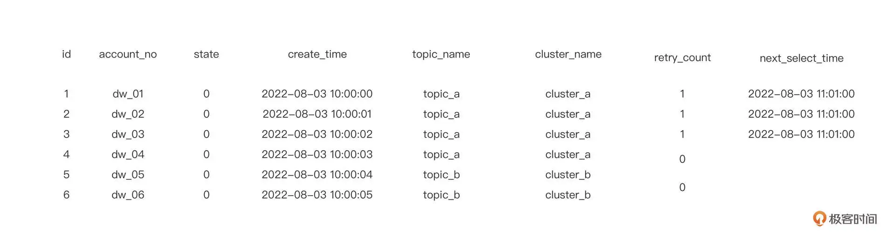

- 00 开篇词 为什么中间件对分布式架构体系来说这么重要？.md
- 01 中间件生态（上）：有哪些类型的中间件？.md
- 02 中间件生态（下）：同类型的中间件如何进行选型？.md
- 03 数组与链表：存储设计的基石有哪些？.md
- 04 红黑树：图解红黑树的构造过程与应用场景.md
- 05 多线程：多线程编程有哪些常见的设计模式？.md
- 06 锁：如何理解锁的同步阻塞队列与条件队列？.md
- 07 NIO：手撸一个简易的主从多Reactor线程模型.md
- 08 Netty：如何优雅地处理网络读写，制定网络通信协议？.md
- 08 加餐 中间件底层的通用设计理念.md
- 09 技术选型：如何选择微服务框架和注册中心？.md
- 10 设计原理：Dubbo核心设计原理剖析.md
- 11 案例：如何基于Dubbo进行网关设计？.md
- 12 案例：如何实现蓝绿发布？.md
- 13 技术选型：如何根据应用场景选择合适的消息中间件？.md
- 14 性能之道：RocketMQ与Kafka高性能设计对比.md
- 15 案例：消息中间件如何实现蓝绿？.md
- 16 案例：如何提升RocketMQ顺序消费性能？.md
- 17 运维：如何运维日均亿级的消息集群？.md
- 18 案例：如何排查RocketMQ消息发送超时故障？.md
- 19 案例：如何排查RocketMQ消息消费积压问题？.md
- 20 技术选型：分布式定时调度框架的功能和未来.md
- 21 设计理念：如何基于ZooKeeper设计准实时架构？.md
- 22 案例：使用分布式调度框架该考虑哪些问题？.md
- 23 案例：如何在生产环境进行全链路压测？.md
- 大咖助阵 高楼：我们应该如何学习中间件？.md
- 用户故事 学而时习之，不亦乐乎.md
- 用户故事 愿做技术的追梦人.md
- 用户故事 浪费时间也是为了珍惜时间.md
- 结束语 坚持不懈，越努力越幸运.md
22 案例：使用分布式调度框架该考虑哪些问题？
你好，我是丁威。
定时调度框架的应用非常广泛，例如电商平台的订单支付超时被取消时，数据清洗时等等。在中间件应用领域，定时调度框架通常和 MQ 等中间件组合使用，联合完成分布式环境下事务的最终一致性。
这节课，我们就一起来看看定时调度框架在消息发送领域的事务一致性设计方案和落地细节。
设计方案
不知道你还记不记得我在[第 13 讲]中提到的用户注册优惠活动的场景，为了实现用户注册主流程与活动的解耦合，我们引入了消息中间件，它的时序图如下所示：

这里的核心指导思想是让账户中心完成用户的注册逻辑，将用户写入到账户中心数据库，然后发送一条消息到 MQ 服务器，再给返回用户“注册成功”。之后，引入两个消费者，分别对消息进行对应的处理，异步赠送优惠券或者积分。
这个方法的架构思路非常不错，但是我们还不得不思考一个问题：如何保证写入数据库与消息发送这两个步骤的一致性呢？我们希望这两个步骤要么一起成功，要么一起失败，绝不能出现用户数据成功写入数据库，但消息发送失败的情况。因为这样用户无法收到优惠券，容易产生一系列的投诉和纠纷。
这其实是一个分布式事务的问题，也就是要保证数据库写入和消息发送这两个分布式操作的一致性。
一种比较常见的解决方案就是：“本地消息表 + 定时任务”。
具体而言，我们首先需要在数据库创建一张本地消息表，表的结构大致如下：

创建了消息发送本地记录表之后，用户注册的流程将变成：
-
开启数据库本地事务；
-
insert into user 表（用户注册表）；
-
insert into msg_send_record，并且存储账户的唯一编号、状态，其中状态的初始值为 0；
-
提交本地事务。
这样做的目的是，保证 user 表和 msg_send_record 的事务一致性，如果用户信息成功存入 user 表，msg_send_record 表中必然存在一条对应的记录，后续我们只需要根据 msg_send_record 表中的记录发送一条对应的 MQ 消息即可。
当然，为了保证 msg_send_record 的写入不至于带来太大的性能损耗，通常我们会采取下面几个措施。
-
如果在分库分表环境中，msg_send_record 采取的分库策略与 user 表一致，我们要保证这个过程是一个本地事务，不至于出现跨库 Join 的情况。
-
为 account_no、创建时间这两个字段添加索引。
-
定时清除 msg_send_record 表中的数据，这个表不需要保留太长时间，尽量控制单表数据量。
数据成功写入消息待发送表后，接下来我们需要引入定时调度程序，定时扫描 msg_send_record 中的记录，将消息发送到 MQ 中。
定时调度程序的数据处理策略主要有三步。首先，按照分页机制从数据库中拉取一批数据；然后，根据用户账户查询用户表，构建消息体（用户账户、用户注册时间）；最后，将消息发送到消息服务器（这里必须提供重试机制）。
引入定时调度程序后，用户注册送积分的时序图变成了下面这样：

在计划执行这个方案时，还有一个非常重要的事情，就是要明确定时调度任务的执行频率。
因为定时调度任务的调度频率直接决定了消息发送的实时性，随着需要调度的任务越来越多，大部分定时调度框架对秒级别的定时调度都不太友好。这时的调度通常都是分钟级的，但分钟级的调度会给任务带来较大的延迟，这是大部分业务无法容忍的，怎么办呢？
ElasticJob 可以通过支持流式任务解决这个问题。具体的思路是：将任务配置为按照分钟级进行调度，例如每分钟执行一次调度。每次调度按照分页去查找数据，处理完一批数据，再查询下一批，如果查到待处理数据，就继续处理数据，直到没有待处理数据时，才结束本次业务处理。如果本次处理时间超过了一个调度周期，那么利用 ElasticJob 的任务错过补偿执行机制会再触发一次调度。
在业务高峰期，这种方式基本上提供了准实时的处理效果。只有在业务量较少时，如果处理完一批数据后没有其他待处理的数据，这时新到的数据才会延迟 1 分钟执行。
综合来看，通过支持流式任务，我们可以极大地提高数据的处理时效。
消息领域定时调度框架的设计方案就介绍到这里了，我想你也许会问，RocketMQ 不是已经提供了事务消息机制吗？这里能不能直接使用 RocketMQ 的事务消息呢？
当然可以。但是很多公司的内部都采用了多种类型的消息中间件，有的中间件并不支持事务消息这个功能。考虑到架构设计方案的普适性，我们通常不会依赖单个中间件的特性。
方案落地
了解了设计方案，我们就可以实现消息发送和数据库操作的分布式事务一致性了。光说不练假把式，接下来，我们就尝试落地这个方案。我会给出一些关键代码，方便你在生产环境中落地实战。
我会基于 ElasticJob 框架简单梳理一下关键代码。通过 ElasticJob 实现一个定时调度任务通常包含两个重要步骤。
首先，我们要实现 ElasticJob 的流式任务接口 DataflowJob，这个接口主要完成定时调度任务的具体业务逻辑：
public class UserSendMqJob implements DataflowJob<UserMsgSendRecord> {
private static int PAGE_SIZE = 100;
private static String USER_SEND_MQ_TOPIC = "user_register_topic";
private IUserMsgSendRecordDao userMsgSendRecordDao;
private DefaultMQProducer defaultMQProducer;
@Override
public List<UserMsgSendRecord> fetchData(ShardingContext shardingContext) {
// 分片总数
int shardingTotalCount = shardingContext.getShardingTotalCount();
//当前任务所处的分片序号
int shardingItem = shardingContext.getShardingItem();
int mod = shardingItem % shardingTotalCount;
// 每次从数据库中取出一批数据
return userMsgSendRecordDao.selectWaitSendRecordPage(mod, 0, PAGE_SIZE);
}
@Override
public void processData(ShardingContext shardingContext, List<UserMsgSendRecord> datas) {
if(datas == null || datas.isEmpty()) {
return;
}
for(UserMsgSendRecord record : datas) {
String body = toJsonMsgBody(record);
String key = record.getAccountNo();
try {
SendResult result = defaultMQProducer.send(new Message(USER_SEND_MQ_TOPIC, null, key, body.getBytes(StandardCharsets.UTF_8)));
record.setMsgId( record.getMsgId());
record.setSendStatus(1);
userMsgSendRecordDao.update(record);
} catch (Throwable e) {
e.printStackTrace();
// 等待下一次调度
}
}
}
private String toJsonMsgBody(UserMsgSendRecord record) {
// 其实就是构建JSON 消息内容，例如包含 注册用户编号
Map<String, Object> body = new HashMap<>();
body.put("accountNo", record.getAccountNo());
body.put("registerTime", record.getCreateTime());
return JSON.toJSONString(body);
}
}
DataflowJob 接口主要定义 fetchData 和 processData 接口，我们分别解读一下这两个接口的实现要点。
先说一下 fetchData。
它主要用于拉取待处理数据，ElasticJob 每触发一次任务调度，都会首先调用 fetchData 方法，尝试获取数据。如果该方法返回数据，ElasticJob 将调用 processData 来完成具体的业务逻辑。处理完一批数据后，还会循环调用 fetchData，看有没有待处理的数据。如果有，则继续调用 processData，直到查询不到待处理数据时，结束本次业务调度。
这里有一个非常关键的点：我们可以通过 ShardingContext 来获取任务的分片信息。其中，shardingTotalCount 是本次任务的总分片数量，shardingItem 是当前任务所处理数据的分片序号。通常我们可以用这两个数和 id 取模，实现数据分片。你可以看看下面这张示意图：

processData 方法，顾名思义，就是用来处理业务逻辑的方法。通过 fetchData 方法查询到的数据会传入 processData 方法中执行，我们这个实例主要是根据待发送记录组装 MQ 消息，然后将消息发送到 MQ 服务器，更新待发送记录，最后将状态从待发送变更为已发送的过程。
不过在实际执行过程中，通常还会遇到另外一个问题。假设我们的业务逻辑要根据不同的类型发送不到不同的 MQ 集群中，部分主题可能一直发送失败，最后影响到其他主题的正常发送。具体的示意图如下：

如果 fetchData 在获取数据时，每一次只拉取 3 条消息，那么它会一次取出 id 为 1，2，3 的三条消息，然后将这些消息发送到 cluster_a 集群的 topic_a 主题。如果某一时刻集群 cluster_a 发生故障，一段时间内无法发送消息，数据仍然被传入 proccessData 方法，就会发现 fetchData 每次拉取出的 id 都是 1，2，3。因为这些消息在 proccessData 中没有处理成功，state 的状态不会更新，需要发往集群 b 的消息也无法正常发送，这会导致严重的业务故障。
那我们如何解决这个问题呢？
**第一步，**我们要在消息待发送表（msg_send_record）中增加两个字段，一个是当前重试次数（retry_count），另外一个是下一次调度的最小时间（next_select_time）。增加了这两个字段的表数据是下面这样：

在处理数据时，如果第一次处理数据失败了，我们需要将重试次数加一，并设置下一次调度的最小时间。例如，用当前时间加一分钟，意味着一分钟内流式处理任务将不再拉取该数据，这就给了其他数据执行机会。
**第二步，**通过配置文件或者其他整合方式声明一个任务，我们这个实例是用 Spirng 方式整合了 ElasticJob，所以我们需要在 XML 文件中配置任务，具体的配置代码如下：
<job:dataflow id="UserSendMqJob" class="net.codingw.mq.task.UserSendMqJob" registry-center-ref="zkRegistryCenter"
cron="0 0/2 * * * ?" sharding-total-count="4"
sharding-item-parameters="0=0,1=1,2=2,3=3" failover="true" streaming-process="true">
我们简要说明一下这些配置参数的含义。
-
id：任务 id，它是全局唯一的。
-
class：调度任务逻辑具体实现类。
-
registry-center-ref：ElasticJob 调度器依赖的 ZooKeeper Bean。
-
cron：定时调度 cron 表达式。
-
sharding-total-count：总分片个数。
-
sharding-item-parameters：分片参数，用于定义各个分片的参数。在进入到 fetchData 方法时，可以原封不动地获取该值，方便地实现一些定制化数据切分策略。
-
failover：是否支持故障转移。设置为“true”表示支持，设置为“false”表示禁用故障转移机制。
-
streaming-process：是否启用流式任务，true 表示启用流式任务。
关于使用 ElasticJob 的其他代码我在这里就不详细介绍了，如果你对使用 ElasticJob 的方法还不是太熟悉，可以看看官方提供的官方示例代码。
总结
好了，我们这课就讲到这里了。
这节课，我们围绕中间件领域如何实现消息发送与业务的分布式事务这个核心问题，详细展示了用 ElasticJob 开发定时调度任务的方法。
我们学习了目前业界解决分布式事务最经典的方案：定时调度 + 本地消息表。这个方案结合 ElasticJob 支持流式任务的特性，提升了任务的实时性。我们也总结了流式任务最常见的“坑”，给出了可行的解决方案。
课后题
学完这节课，给你留一道思考题。
你有没有在工作中遇到需要处理分布式事务的场景？你又是如何设计的呢？
欢迎你在留言区与我交流讨论，我们下节课再见！
© 2019 - 2023 Liangliang Lee. Powered by Vert.x and hexo-theme-book.